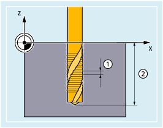

For tapping without compensating chuck, the traversing motion of the linear axis and the spindle are interpolated, closed-loop position controlled. This requires a position-controlled spindle with position measuring system.
① | Thread pitch |
② | Thread depth |
Tapping
| SPOS=... | |
| G331 X.../Y.../Z... I.../J.../K... S... | |
| G332 X.../Y.../Z... I.../J.../K... |
| Defined spindle start position Required for threads, for which a defined thread start position is specified or are machined using multiple machining operations. | |
| Tapping in the drilling direction up to the end of thread point The tapped hole is defined by the traversing motion of the axis (drilling depth) and the thread pitch. | |
Effective: | Modal | |
| Retraction motion up to the tapping block G331 with automatic spindle direction of rotation reversal Retraction motion must have the same pitch as when tapping (G331). | |
Effective: | Modal | |
| Drilling depth Traversing distance/position of the geometry axis (X, Y or Z) at the end of the thread. | |
| Thread pitch I (X), J (Y) or K (Z) The thread direction of rotation (right or left-hand thread) is defined by the sign of the pitch:
| |
Range of values: | ±0.001 ... ±2000.00 mm/revolution | |
| Spindle speed The last active spindle speed is used if a spindle speed is not specified. | |
| Note |
Second gear-stage data blockTo achieve effective adaptation of spindle speed and motor torque and be able to accelerate faster, a second gear-stage data block for two further configurable switching thresholds (maximum speed and minimum speed) can be preset in axis-specific machine data deviating from the first gear step data block and also independent of these speed switching thresholds. The specifications of the machine manufacturer must be observed. Additional information: → Function Manual "Axes and spindles" |